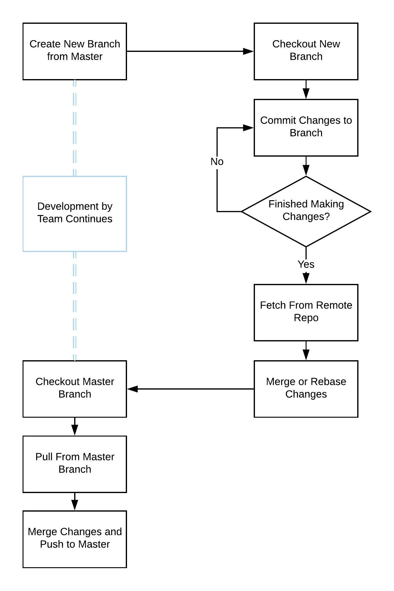

Git
What Is Git?
Git is a version control system that helps software developers and teams manage changes in their code over time. Git keeps track of every modification made to a piece of code, and if mistakes are made, programmers can revert back to earlier versions. Using version control protects software projects when new features are being developed, as multiple versions of code can be developed independently and merged later, maintaining the integrity of a project.
How Do We Use Git?
Git is useful for both independent work, and work in teams. It is a simple, safe and efficient tool for enabling multiple people to collaborate on the same piece of software. On the ADAS team, we have developed a set of rules and methods for using git to collaborate on a project. If someone would like to develop a new feature, for example 'people detection', they would create a new branch of the software, develop the feature, and merge it back with the main piece of code after it has been verified. They are as follows:
Basic Commands